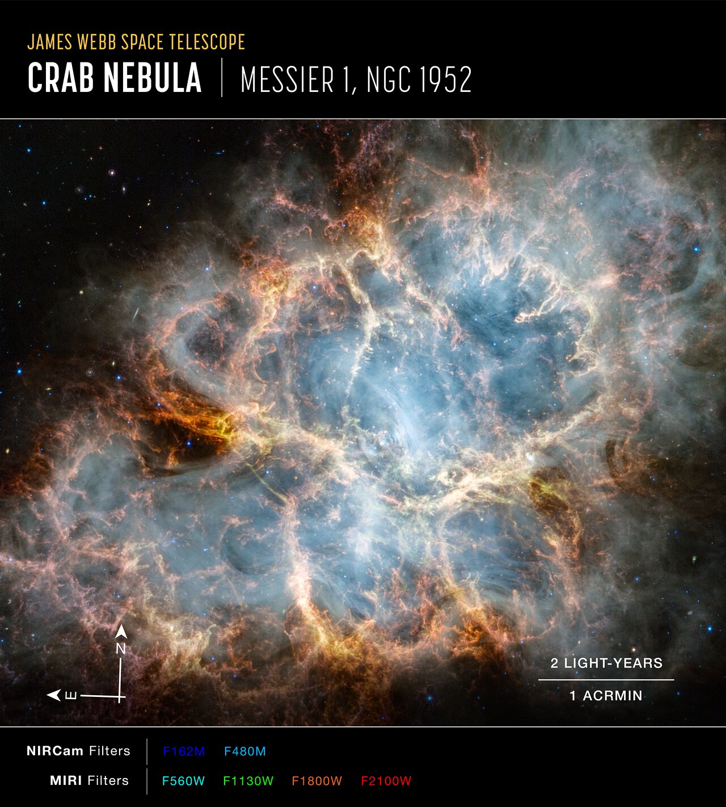

🖼️ Featured Nebula Image
A stunning nebula—where stars are born and cosmic dust dances in light.
What Is a Star?
A star is a self-luminous sphere of plasma held together by gravity, undergoing nuclear fusion in its core. It transforms matter and radiates energy across the cosmos.
Stellar Genesis
- Gravitational Collapse: Dense regions in molecular clouds collapse.
- Protostar Phase: Infrared glow, rotating disk, rising temperature.
- Ignition: Fusion begins at ~10 million K, forming a main-sequence star.
Nuclear Fusion
Stars fuse hydrogen into helium via the proton-proton chain or CNO cycle, releasing energy and maintaining hydrostatic equilibrium.
Stellar Classification
| Type | Color | Temp (K) | Mass (☉) | Lifespan |
|---|---|---|---|---|
| O | Blue | >30,000 | 15–100+ | ~1–10 Myr |
| B | Blue-white | 10,000–30,000 | 2–15 | ~10–100 Myr |
| A | White | 7,500–10,000 | 1.4–2 | ~500 Myr |
| F | Yellow-white | 6,000–7,500 | 1.0–1.4 | ~2–4 Gyr |
| G | Yellow | 5,200–6,000 | 0.8–1.0 | ~10 Gyr |
| K | Orange | 3,700–5,200 | 0.5–0.8 | ~20–30 Gyr |
| M | Red | <3,700 | 0.08–0.5 | ~100+ Gyr |
Star Anatomy
- Core: Fusion zone.
- Radiative Zone: Photon energy transfer.
- Convective Zone: Plasma circulation.
- Photosphere: Visible surface.
- Chromosphere & Corona: Outer layers, source of solar wind.
Life Cycle
- Low-Mass: Main Sequence → Red Giant → Planetary Nebula → White Dwarf
- High-Mass: Main Sequence → Red Supergiant → Supernova → Neutron Star or Black Hole
Cosmic Significance
Stars forge elements, shape galaxies, and enable life. Their deaths seed the universe with the building blocks of planets and organisms.
Fun Facts
- The Sun fuses 600 million tons of hydrogen per second.
- A teaspoon of neutron star matter weighs a billion tons.
- UY Scuti could engulf Saturn’s orbit.